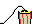

Chrome Extension
Floating
Twitch Chat
Keep reading chat
without leaving fullscreen
. Drag it anywhere on the player.
FFZ · BTTV · 7TV emotes
Drag & resize
Your colours
live
Garu1f
: no way he actually hit that
stardust_dragon
: chat in fullscreen
DeceitfulPear
: clip it

Cyberwire69
:
Allmostdone
: been waiting for this one
tooclosebutfar
: W overlay
Goofycatcher
: gg